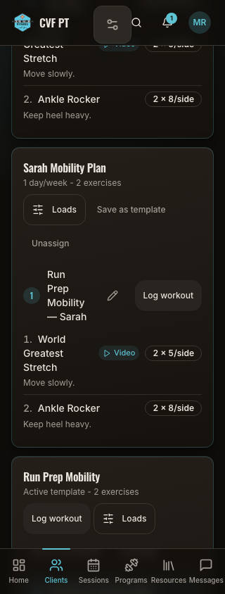
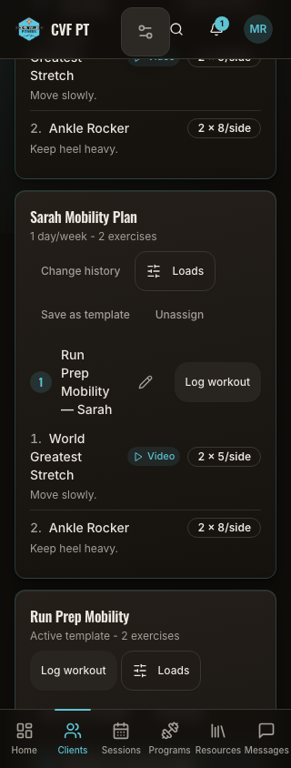
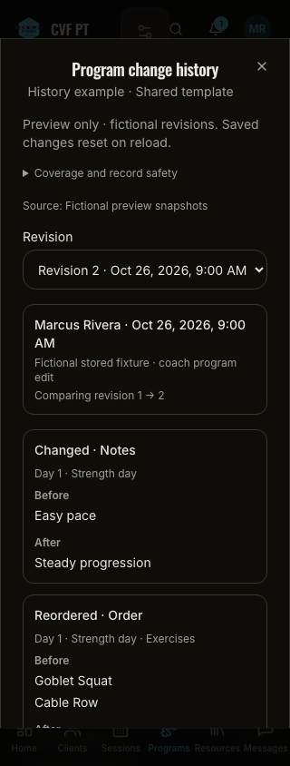
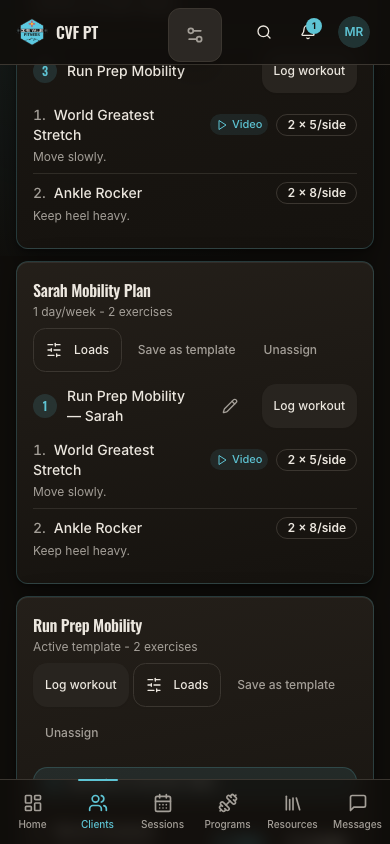
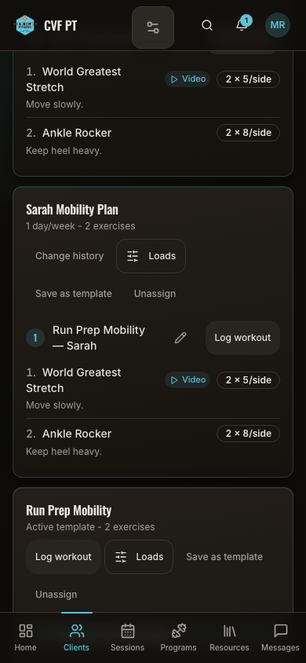
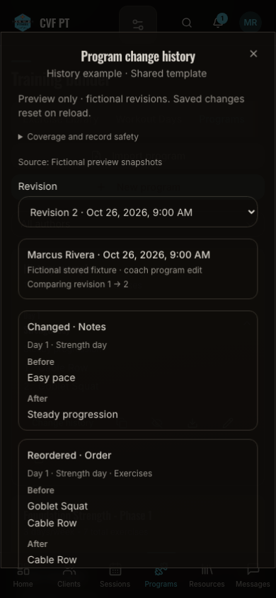
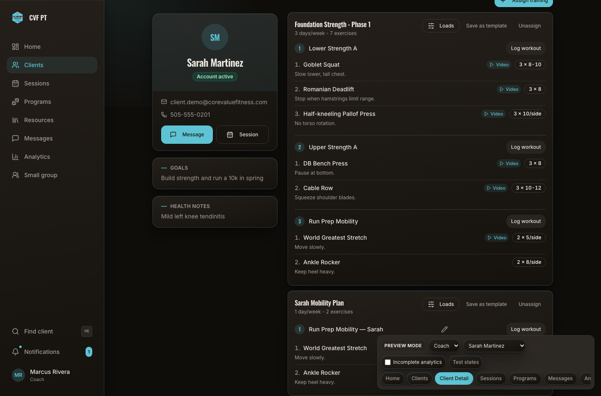
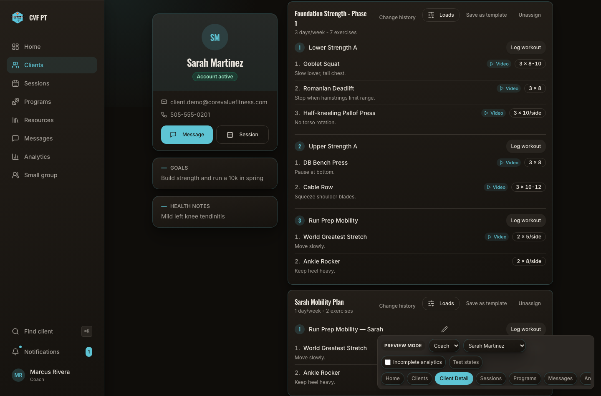
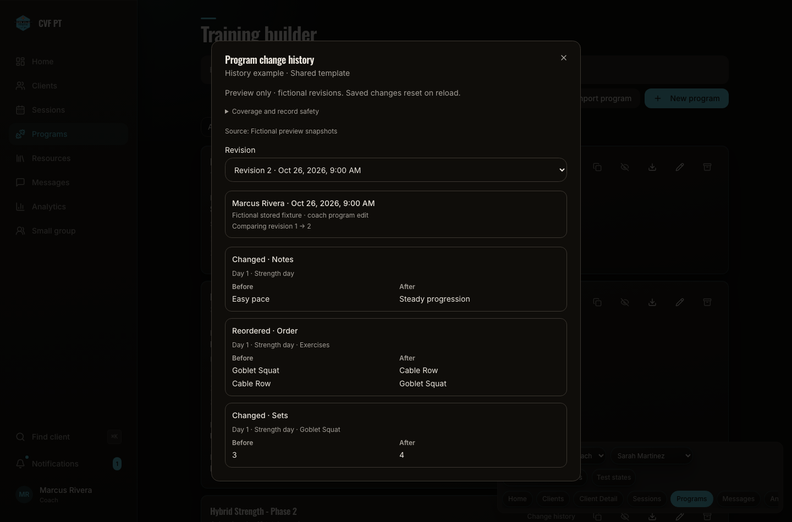

Program change history
Actual baseline 84b47186 and isolated candidate 113ed4b under the same fictional Sarah fixture, fixed clock (2026-10-27 16:00 UTC), dark theme, viewport and logical state. The Programs tab is scrolled to the mobility program card. The added Change history entry uses existing components and tokens. There was no history dialog in the baseline; the new dialog is shown separately with explicit fictional source labels.
These screenshots verify local rendering only. Real API history is unavailable; forward capture remains memory-only preview. No production client records were used. Image hashes, source and dimensions: manifest.
320px

Before: original assigned-program actions.
After: Change history entry added; existing program content preserved.
New dialog: explicit preview provenance, author/time, revision selector and before/after values. Additional changes are available by scrolling.390px

Before: original assigned-program actions.
After: Change history entry added; existing program content preserved.
New dialog: explicit preview provenance, author/time, revision selector and before/after values. Additional changes are available by scrolling.1440px

Before: original assigned-program actions.
After: Change history entry added; existing program content preserved.
New dialog: explicit preview provenance, author/time, revision selector and before/after values. Additional changes are available by scrolling.